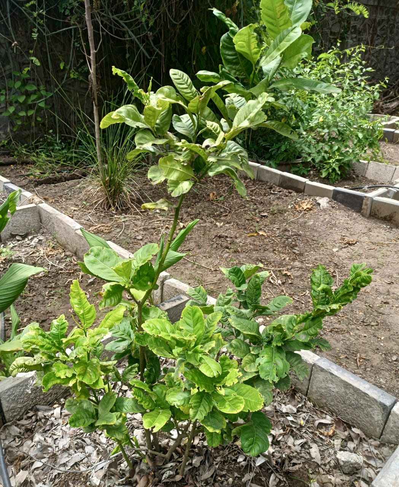

Medicinal Plant

Botanical Name: Citrus medica var. limonum ( Risso Brandis)
Common Name: Idlimbu / Rough Lemon / Citron
Family: Rutaceae
A small citrus tree with green leaves and sour yellow fruits.